Rancher简介
Rancher是一个开源的企业级容器管理平台。通过Rancher，企业再也不必自己使用一系列的开源软件去从头搭建容器服务平台。Rancher提供了在生产环境中使用的管理Docker和Kubernetes的全栈化容器部署与管理平台。
Rancher由以下四个部分组成：
- 基础设施编排
Rancher可以使用任何公有云或者私有云的Linux主机资源。Linux主机可以是虚拟机，也可以是物理机。Rancher仅需要主机有CPU，内存，本地磁盘和网络资源。从Rancher的角度来说，一台云厂商提供的云主机和一台自己的物理机是一样的。
Rancher为运行容器化的应用实现了一层灵活的基础设施服务。Rancher的基础设施服务包括网络， 存储， 负载均衡， DNS和安全模块。Rancher的基础设施服务也是通过容器部署的，所以同样Rancher的基础设施服务可以运行在任何Linux主机上。
- 容器编排与调度
很多用户都会选择使用容器编排调度框架来运行容器化应用。Rancher包含了当前全部主流的编排调度引擎，例如Docker Swarm， Kubernetes， 和Mesos。同一个用户可以创建Swarm或者Kubernetes集群。并且可以使用原生的Swarm或者Kubernetes工具管理应用。
除了Swarm，Kubernetes和Mesos之外，Rancher还支持自己的Cattle容器编排调度引擎。Cattle被广泛用于编排Rancher自己的基础设施服务以及用于Swarm集群，Kubernetes集群和Mesos集群的配置，管理与升级。
- 应用商店
Rancher的用户可以在应用商店里一键部署由多个容器组成的应用。用户可以管理这个部署的应用，并且可以在这个应用有新的可用版本时进行自动化的升级。Rancher提供了一个由Rancher社区维护的应用商店，其中包括了一系列的流行应用。Rancher的用户也可以创建自己的私有应用商店。
- 企业级权限管理
Rancher支持灵活的插件式的用户认证。支持Active Directory，LDAP， Github等 认证方式。 Rancher支持在环境级别的基于角色的访问控制 (RBAC)，可以通过角色来配置某个用户或者用户组对开发环境或者生产环境的访问权限。
rancher的部署方式有很多种，具体可以参考文档https://rancher.com/docs/v2.x/en/installation/requirements/，今天我们讲讲如何通过helm部署rancher到k8s集群中，然后管理和创建我们的k8s集群。
添加helm源
1 | [root@elasticsearch01 yaml]# helm repo add rancher-stable https://releases.rancher.com/server-charts/stable |
申请域名和证书
由于rancher必须通过域名https访问，域名这里需要自己购买，ssl证书这里可以在云上申请一个免费的，有效期一年，这里后面ingress需要用到，我这里的域名是
1 | # kubectl create ns cattle-system |
helm部署rancher
1 | # helm install rancher-stable/rancher --namespace=cattle-system --set hostname=rancher.minminmsn.com --set ingress.tls.source=rancher-tls --generate-name |
部署ingress
这里我们通过ingress来暴露访问的域名
1 | apiVersion: networking.k8s.io/v1beta1 |
访问rancher
我们看下pod都起来后，可以在浏览器中输入链接https://rancher.tke.niewx.cn就可以访问域名了
1 | [root@VM-0-13-centos racher]# kubectl get pod,svc,ingress -n cattle-system |
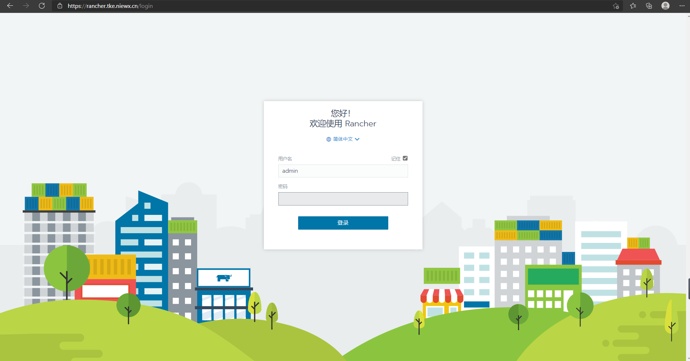
我们成功登录之后，这里就说明rancher部署成功了。
添加集群
我们可以将已有的k8s集群添加到rancher里面进行管理
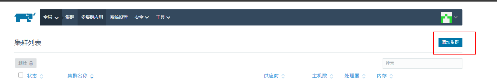
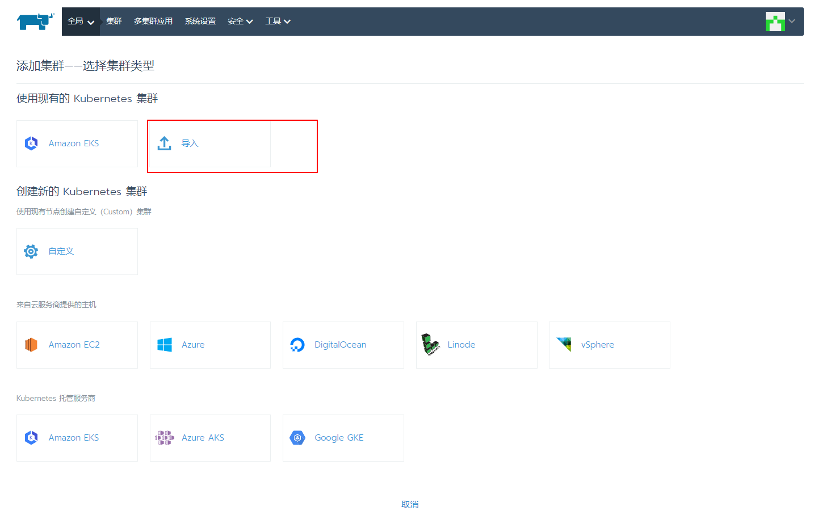
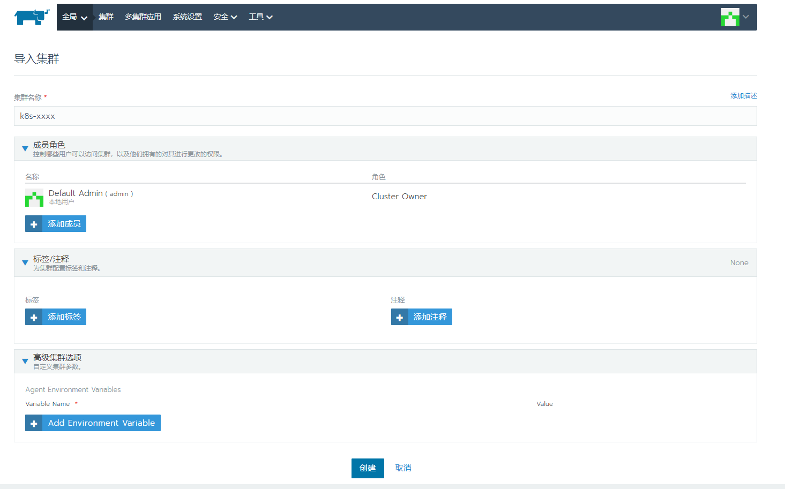
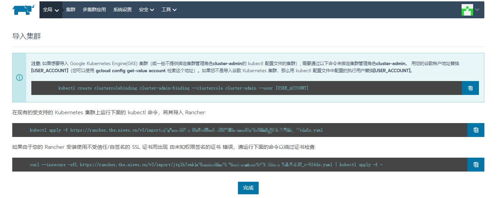
我们在集群中执行以下命令后，集群就可以添加成功了，如果看到集群的状态是active，说明可以通过rancher管理其他已有的k8s集群了。
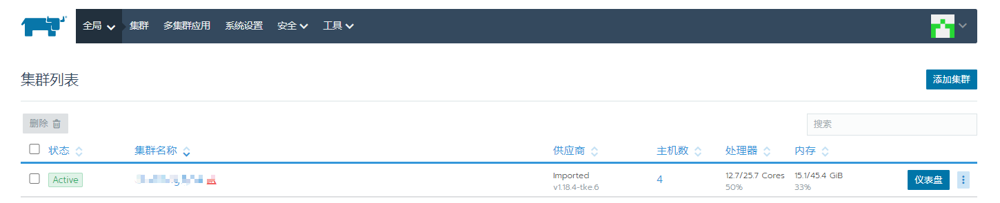
新建k8s集群
由于新建k8s集群需要拉取master组件镜像，这里我们可以修改下镜像源阿里源，避免镜像拉取失败导致集群创建失败，可以在rancher的系统设置中system-default-registry字段统一进行设置
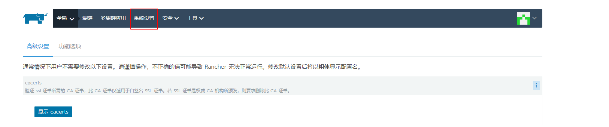
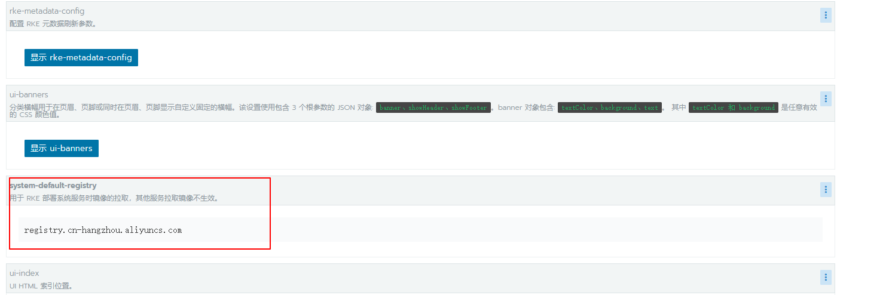
我们在控制台新建一个test集群，然后选择集群配置，配置好之后，根据提示命令在对应节点上输入就会自动进行部署了
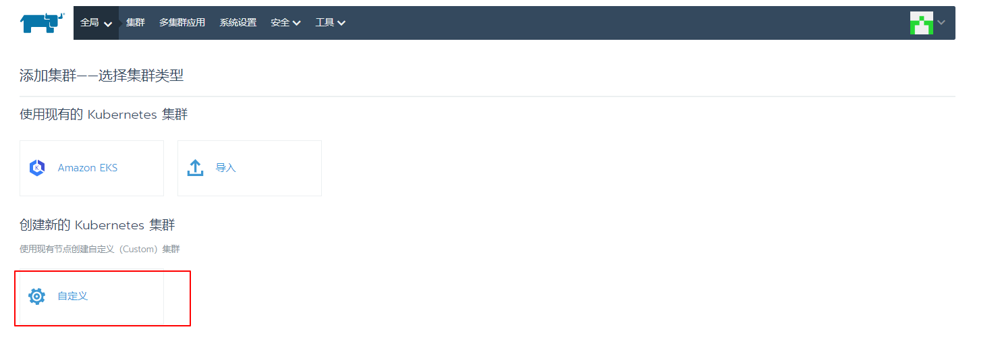
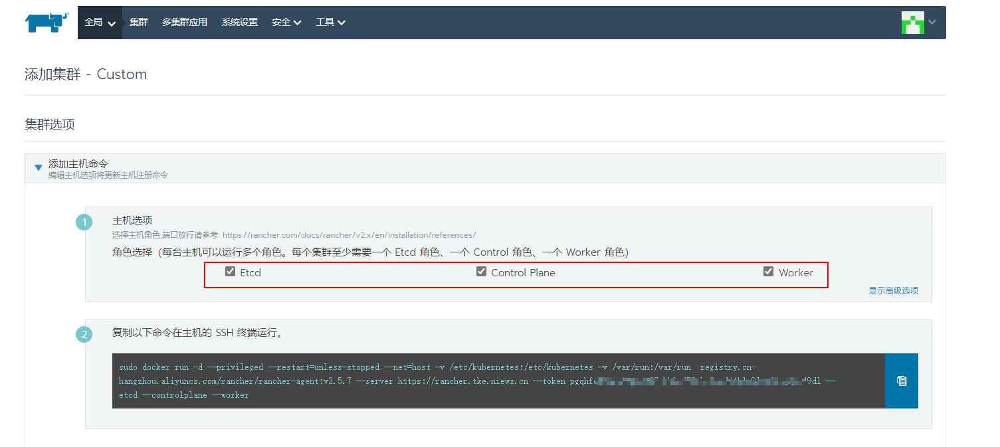
这里部署的过程中遇到了一个问题[etcd] Failed to bring up Etcd Plane: etcd cluster is unhealthy
这里我们执行如下命令，然后重启docker即可
1 | docker stop $(docker ps -aq) |
这里测试部署只有一台虚拟机，所以都是部署在同一台机器上，稍等一会，docker容器都起来了，然后rancher界面显示集群active，则说明集群部署成功
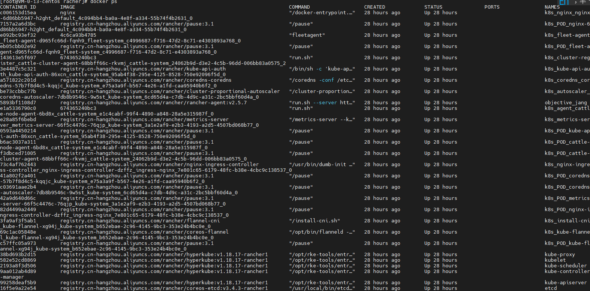
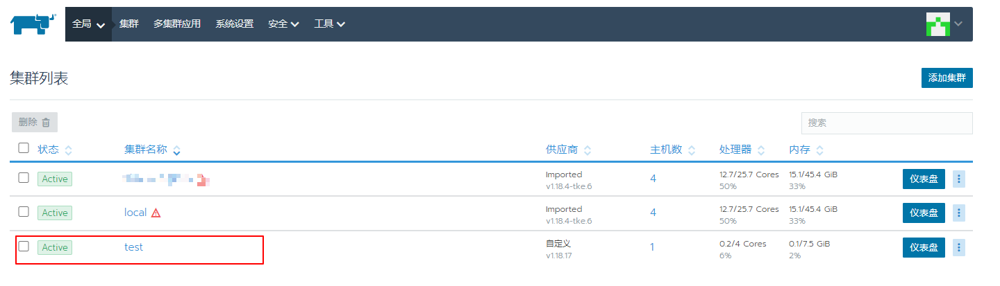
集群创建成功后，点击集群进去，然后可以获取kubecofig，或者用rancher提供的命令行工具访问集群
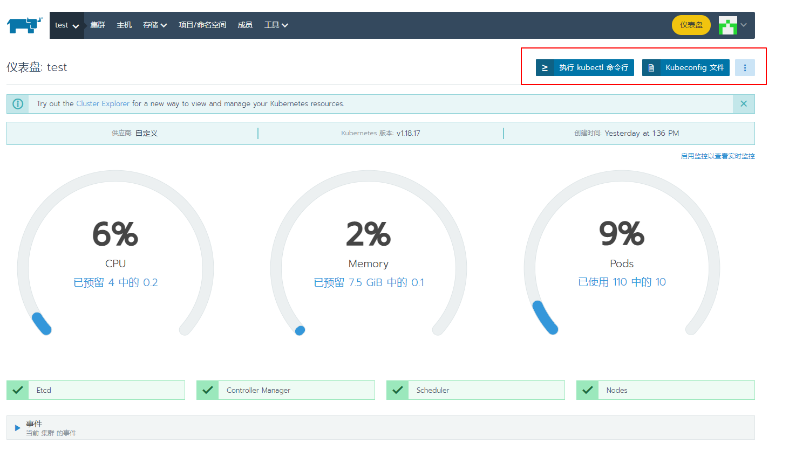
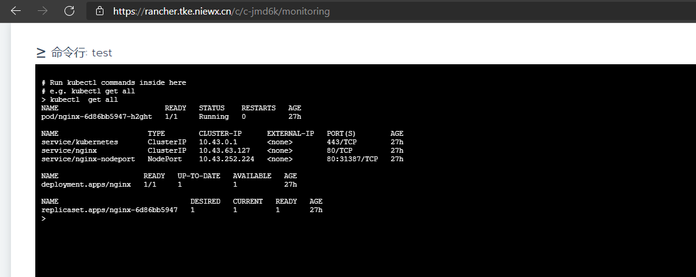
到这里，我们通过rancher部署的集群就成功了，接着就可以愉快的玩耍k8s了，rancher这里我们只是简单讲了下搭建和基本使用，其实rancher还有很多好玩的功能，大家可以自行参考官方文档进行使用
参考文档
https://rancher.com/docs/v2.x/en/installation/requirements/

欢迎访问 Vashon 的博客，博客和文章在完善中，请大家耐心等待。 若有问题或者有好的建议欢迎留言，笔者看到之后会及时回复。

...
...